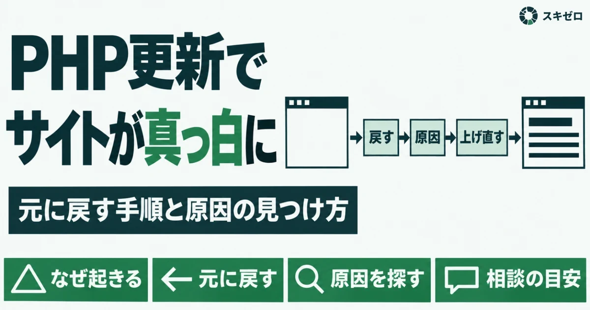
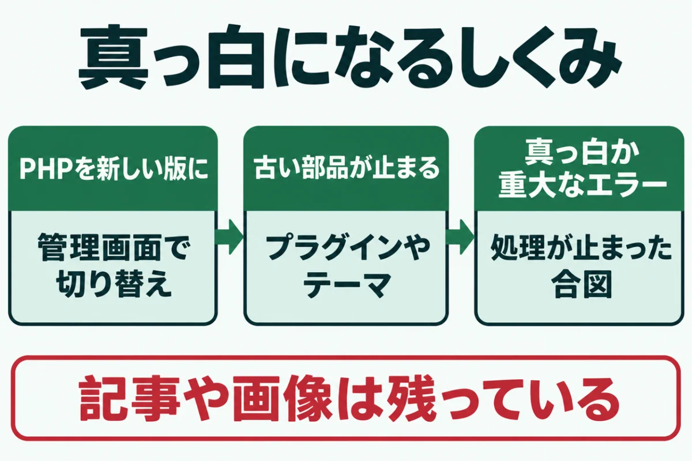
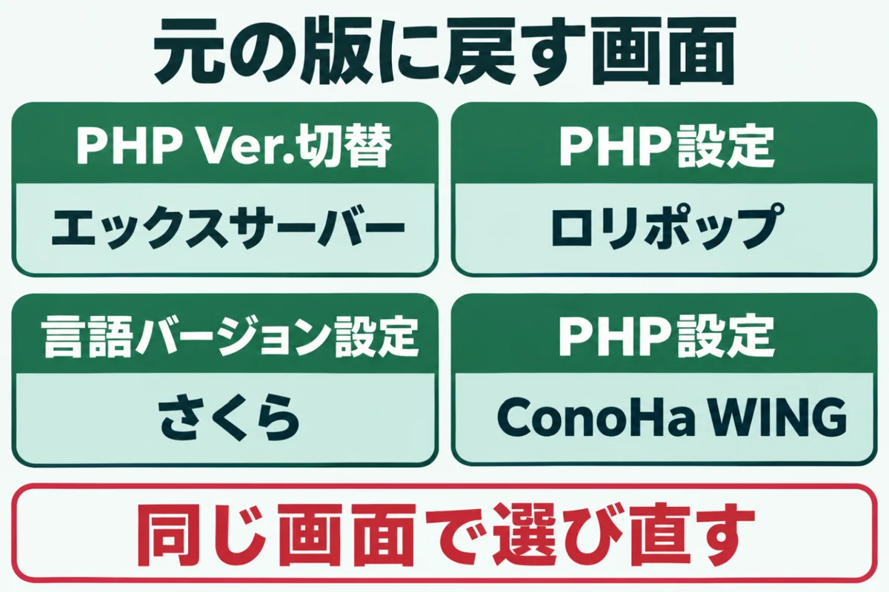
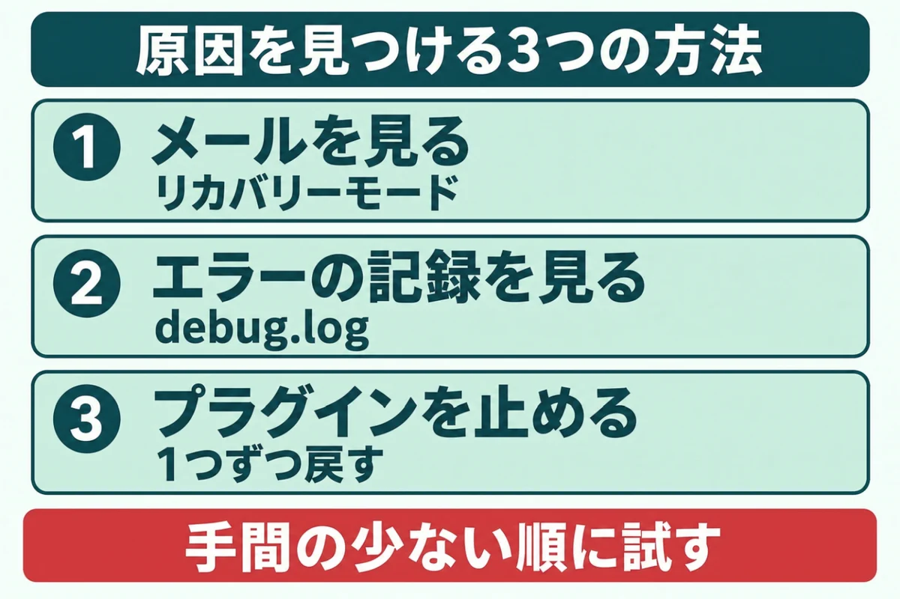
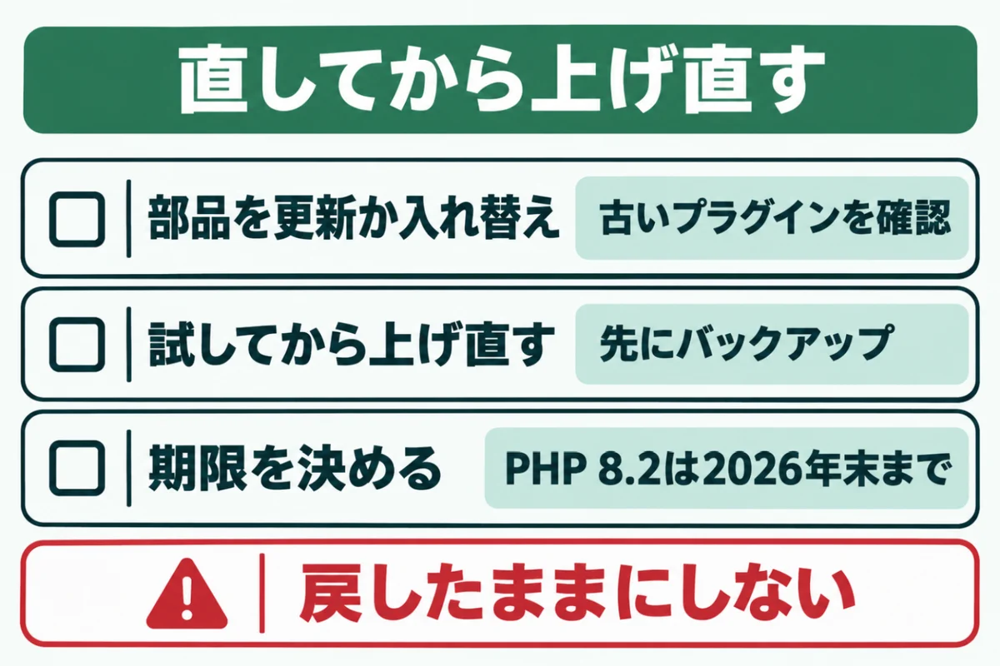
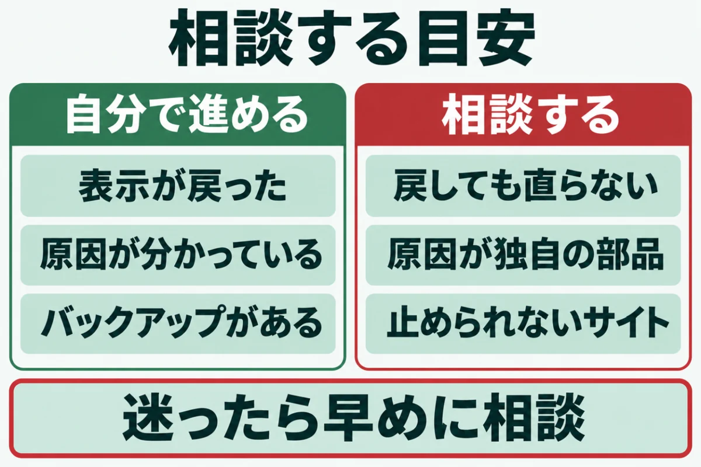

PHPを更新したらサイトが真っ白に元に戻す手順と原因の見つけ方

「サーバーの管理画面でPHPを更新したら、ホームページが真っ白になった」と困っていませんか？
真っ白な画面や「このサイトで重大なエラーが発生しました」という表示は、あわてる場面です。ただ、記事や画像が消えたわけではありません。多くは、PHPを元の版に戻せば表示が戻るでしょう。
この記事では、まず戻す、原因を見つける、直して上げ直すの順に進め方をまとめました。専門家に相談する目安も紹介します。
内容は、WordPressとPHPの公式ドキュメントをもとにしました。サーバー会社4社の公式マニュアルも、2026年11月25日に確かめています。サーバーの管理画面に入れる状態で読み進めてください。
PHPの更新でサイトが真っ白になるのはなぜか

PHPの更新でサイトが真っ白になるのは、新しいPHPに合わない部品が止まるためです。サイトの中身が消えたわけではありません。
記事はデータベースに、画像はサーバーのファイルにそのまま残っています。止まっているのは、ページを組み立てるプログラムの一部でしょう。仕組みを知っておくと、落ち着いて戻す作業に入れます。
新しいPHPで動かない部品がエラーで止まる
WordPressは、本体とテーマ、プラグインがPHPで動いています。PHPは版が大きく上がると、古い書き方の一部が使えなくなる仕組みです。古い書き方が残った部品は、新しいPHPの上でエラーを起こして止まります。エックスサーバーの公式の案内も、プラグインやテーマが対応していない可能性を挙げていました。最終更新から長くたった部品は、PHP 8に対応していないことがあるとの説明です。原因は、何年も更新していない部品にあることが多いでしょう。
真っ白な画面と「重大なエラー」の表示の違い
WordPress 5.2からは、止まるほどのエラーを見つけて知らせる仕組みが入りました。この仕組みが働くと、「このサイトで重大なエラーが発生しました」と表示される形です。公式の説明では、PHPのエラーは何も出ない真っ白な画面として表れることもあるとされています。どちらの画面も、エラーで処理が止まった合図です。表示の違いで、対処の順番を変える必要はありません。まず元の版に戻すところから始めましょう。
- 参考：Recovery Mode｜WordPress.org Documentation
- 参考：Common WordPress errors｜WordPress Developer Resources
PHPの更新で真っ白になったら、まず元の版に戻す

PHPの更新で真っ白になったら、原因探しより先に、表示を戻すことを考えます。お客さまが見ている本番のサイトだからです。
戻す操作は、PHPを上げたときと同じ画面で行えます。上げる前の版の番号を覚えていない場合は、1つ前の版から試してください。戻したあとの確かめ方と、戻らないときに見るところも順に紹介します。
サーバーの管理画面で前の版を選び直す
サーバーの管理画面でPHPの設定を開き、上げる前の版を選んで保存します。さくらのレンタルサーバの公式マニュアルは、表示されないときは元に戻せば直せると案内する内容です。上げたときと同じ画面で、元の版を選び直すだけで済みます。反映までの時間は会社によって違い、ロリポップは5〜10分ほどです。4社の画面の名前は、次の表にまとめました。エックスサーバーでPHPのバージョンを上げる手順と事前チェックも見てください。
| サーバー | PHPの版を選ぶ画面 | 公式の説明（2026年11月25日時点） |
|---|---|---|
| エックスサーバー | サーバーパネルの「PHP Ver.切替」 | 表示されないときは、他の版へ変えて表示を確かめる |
| ロリポップ | ユーザー専用ページの「PHP設定」 | 反映まで5〜10分ほど。PHP 7.1未満から上げた場合は戻せない |
| さくらのレンタルサーバ | サーバーコントロールパネルの「言語バージョン設定」 | 古い版を選び直せば元に戻せる。設定は即時に反映される |
| ConoHa WING | 「サイト管理」「サイト設定」「応用設定」の順に開いた「PHP設定」 | プルダウンから版を選んで保存する |
- 参考：PHPのバージョンについて｜エックスサーバー マニュアル
- 参考：PHP設定｜ロリポップ！レンタルサーバー マニュアル
- 参考：PHPのバージョンを変更したい｜さくらのサポート情報
- 参考：WordPressのダッシュボードにPHPの更新が必要と表示される場合の対応を知りたい｜さくらのサポート情報
- 参考：PHPの設定をする｜ConoHa WINGサポート
表側と管理画面の両方で戻ったかを確かめる
版を戻したら、少し待ってからサイトを開き直します。トップページだけでなく、下の階層のページとお問い合わせフォームも見てください。管理画面にログインできるかも、あわせて確かめます。表側と管理画面の両方が開けば、ひとまず復旧です。ブラウザに古い画面が残ることがあるので、再読み込みをするか別の端末でも見ましょう。戻した日時と版の番号は、あとで原因を調べるときに使います。忘れないうちにメモへ残してください。
戻しても真っ白なままのときに見るところ
版を戻しても真っ白なままなら、PHPの版のほかにも原因があります。同じ日に、プラグインやテーマを更新していないかを思い出してください。ロリポップでは、PHP 7.1未満から上げると元の版に戻せません。この場合は、新しい版のままで原因の部品を止める進め方になります。「データベース接続確立エラー」と出るときは、データベース側の設定が原因でしょう。ロリポップでPHPのバージョンを変更する手順｜8.3以上への上げ方と戻せないときの注意が役立ちます。
PHPの更新で真っ白になった原因を見つける3つの方法

PHPの更新で真っ白になった原因は、3つの方法で順番に絞り込めます。手間の少ないものから順に並べました。
原因を調べるには、もう一度新しい版にしてエラーを出す場面があります。お客さまが少ない時間帯か、本番とは別の試す場所で行いましょう。表示を戻した状態のままでも、届いたメールの確認だけは先に済ませられます。
① 届いたメールとリカバリーモードで確かめる
WordPress 5.2以降は、止まるほどのエラーが出ると管理者あてにメールが届きます。件名は「サイトで技術的な問題が発生しています」です。本文には、原因と見られる部品の名前や専用のリンクが載っています。リンクから入ると、問題の部品だけが止まった状態でログインできるのです。この状態をリカバリーモードと呼び、管理画面でどの部品が止められたかを確かめられます。リンクには期限があるので、早めに開いてください。
- 参考：Recovery Mode｜WordPress.org Documentation
- 参考：Fatal Error Recovery Mode in 5.2｜Make WordPress Core
② エラーの記録（ログ）を見る
メールが届かないときは、エラーの記録を見てください。wp-config.phpの設定で、wp-content/debug.logに記録が残ります。公式の説明は、公開中のサイトでの利用をすすめていません。試す場所で使うか、本番では短い時間にとどめるのが安全でしょう。画面には出さず、ファイルにだけ残す設定にします。記録にpluginsやthemesの下のフォルダ名があれば、原因の手がかりです。エックスサーバーは、サーバーパネルの「エラーログ」でも見られます。調べたあとは、設定を元に戻してください。
③ プラグインをまとめて止めて1つずつ戻す
記録で分からないときは、プラグインを全部止めて確かめます。管理画面に入れるなら、すべて無効にして1つずつ有効に戻してください。入れないときは、FTPでpluginsフォルダの名前を変える方法が公式にあります。名前を変えると、プラグインが全部止まる仕組みです。管理画面のプラグインの一覧を開いてから、フォルダの名前を戻しましょう。プラグインは止まったままなので、1つずつ有効にして原因を探します。直らなければ、テーマを既定のものに替えてみてください。
PHPの更新で真っ白にならないよう、直してから上げ直す手順

原因が分かったら、PHPの更新で真っ白にならない状態に直してから上げ直します。戻して終わりにしないことが大切です。
古いPHPに戻した状態は、あくまで応急の手当てにすぎません。原因の部品を直し、試す場所で確かめてから、期限を決めてもう一度上げましょう。この順番を守れば、同じ真っ白な画面をくり返さずに済みます。
原因の部品を更新するか入れ替える
原因のプラグインやテーマが分かったら、まず新しい版が出ていないかを見ます。更新で新しいPHPに対応していれば、それで解決です。何年も更新がない部品は、同じ役割の別のものへ入れ替えましょう。運営者の自社サイトでも、PHPを8.3に上げたとき管理画面にエラーが出ました。何年も更新されていないプラグインが原因で、入れ替えて解消しています。WordPress本体も、先に最新版へ上げておいてください。入れ替えたあとは、表示と管理画面の動きを確かめましょう。
試す場所か、人の少ない時間に上げ直す
直したあとも、いきなり本番で切り替えないのが安全です。さくらのレンタルサーバやロリポップは、試す場所を作る方法を公式に案内しています。試す場所がなければ、見る人が少ない時間帯を選んでください。ファイルとデータベースのバックアップを先に取ることも欠かせません。切り替えたら、表側と管理画面、フォームの順に確かめましょう。PHP 8.1から8.3へ上げる前に確認すること｜止まりやすい変化と事前チェックの手順が役立ちます。
戻したままにせず、期限を決める
PHPを戻したまま使い続けるのは、すすめられません。2026年11月時点のphp.netでは、PHP 8.2の修正は2026年12月31日で終わります。PHP 8.1とそれより前の版は、すでに修正が届かない状態です。修正が終わった版には、見つかった弱点が残り続けるでしょう。さくらのレンタルサーバの公式マニュアルも、古い版を使い続ける危険にふれています。上げ直す日を決め、予定に入れてください。各版の期限はPHPのサポート終了とは？放置の危険と確認・更新の手順｜8.2は2026年末で終了で確かめられます。
PHPの更新で真っ白になったとき、専門家に相談する目安

PHPの更新で真っ白になったときは、自分で進める範囲を先に決めておくと安心です。無理に触ると、戻せる状態まで失いかねません。
版を戻して表示が戻ったなら、あわてて作業を急ぐ必要はなくなります。そのあとの原因探しと上げ直しは、頼む相手を落ち着いて選べるでしょう。自分で進める場合と相談する場合の目安を、順に紹介します。
自分で進めてよい場合
版を戻して表示が戻り、原因の部品も分かっているなら、自分で進められます。メールに部品の名前が書かれていて、更新や入れ替えで済む場合が当てはまるでしょう。プラグインを1つ入れ替える程度なら、手順どおりで済みます。バックアップがあり、戻し方も分かっていることが条件です。作業の前に、今の版と変更した日時を控えてください。少しでも迷ったら、そこで手を止めて相談に切り替えましょう。止める判断も、サイトを守る大事な作業の1つです。
制作会社や専門家に相談したほうがよい場合
次のような場合は、早めに制作会社や専門家へ相談してください。版を戻しても表示が戻らない場合が、まず当てはまります。ロリポップでPHP 7.1未満から上げていて、元の版に戻せない場合も同じです。原因がテーマや独自のプログラムにあるときも、直すには知識が要るでしょう。予約や注文を受けるサイトは、止まっている時間がそのまま損になります。管理画面にもサーバーにも入れない場合は、相談が近道です。バックアップがない場合も、自分で触る前に相談しましょう。
相談するときに伝えること
相談するときは、状況を短くまとめて伝えてください。ロリポップの公式マニュアルは、サポートへ伝える情報にURLやエラーの内容を挙げています。URL、エラーの内容、変更した日時の3点が基本です。変更の前と後の版の番号も、あわせて伝えましょう。サーバー会社の名前とプランも添えると、話が早いでしょう。画面の写真や届いたメールの本文があると、原因を絞りやすくなります。ログインの情報は、メールの本文に書かず安全な方法で渡してください。
URLを入れるだけで、PHPやWordPress本体、プラグインなど8項目を無料で判定します。原因の部品の入れ替えやPHPの上げ直しは、対策作業（14,800円から・税込）でもお受けしています。
無料で診断するPHPの更新で真っ白になる問題に関するよくある質問
PHPを元の版に戻すと、記事や画像は消えますか？
消えません。PHPの版を変える操作は、プログラムを動かす土台を切り替えるだけです。記事はデータベースに、画像はサーバーのファイルに残っています。ただし、原因を調べる作業でファイルを触るときは別でしょう。フォルダの名前を変える前には、バックアップを取っておいてください。戻したあとで表示が元どおりかを、いくつかのページで確かめましょう。
表側は表示されるのに、管理画面だけ真っ白になります。なぜですか？
管理画面でだけ動く部品が、エラーを起こしていると考えられます。プラグインには、管理画面の中だけで働くものがあるからです。この場合も、まずPHPを元の版に戻してください。そのうえで、届いたメールやエラーの記録から原因の部品を探します。表側が見えていても、そのままでは記事の更新ができないでしょう。早めに原因を直してから、上げ直す日を決めてください。
リカバリーモードのメールが届きません。どうすればよいですか？
まず、迷惑メールのフォルダを見てください。メールは、WordPressに登録した管理者のアドレスに届きます。担当者が替わって、前の人のアドレスのままになっていることもあるでしょう。公式の説明でも、サーバーから直接送られたメールは届かない場合があるとされています。届かないときは、エラーの記録を見る方法に切り替えましょう。復旧のあとで、管理者のアドレスを今の担当者のものに直してください。
PHPを戻したままで、しばらく使い続けても大丈夫ですか？
原因を直すまでの応急の手当てとしてなら、やむを得ません。ただし、長く使い続けるのは避けてください。修正が終わったPHPには、新しく見つかった弱点が残るからです。php.netでは、PHP 8.2の修正も2026年12月31日で終わります。戻した版が8.1かそれより前なら、すでに修正は届いていません。原因を直す日と上げ直す日を、先に決めておきましょう。
制作会社に連絡がつかないときは、どうすればよいですか？
PHPの版を戻す操作は、サーバーの管理画面に入れれば自分でできます。ログインの情報が手元にあるかを、まず確かめてください。情報がなければ、契約者としてサーバー会社のサポートに相談しましょう。ロリポップは、表示に問題が出たときの連絡のしかたをマニュアルで案内しています。原因の調査や部品の入れ替えは、別の制作会社や専門家にも頼めるでしょう。頼むときは、エラーの内容と変更した日時を伝えてください。
まとめ
PHPの更新でサイトが真っ白になったら、まずサーバーの管理画面で元の版に戻します。記事や画像が消えたわけではないので、落ち着いて進めてください。原因は、届いたメール、エラーの記録、プラグインの停止の順に探せます。
原因の部品を直したら、期限を決めてもう一度上げ直すことが大切です。戻しても直らないときや迷ったときは、早めに専門家へ相談しましょう。
まずは、今の状態を知るところから。
URLを入れるだけで、数十秒で判定が出ます。登録はいりません。